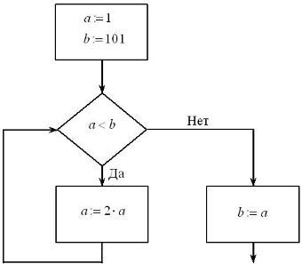
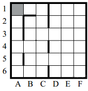
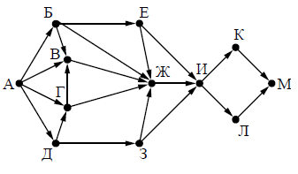
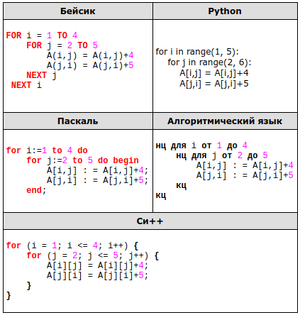
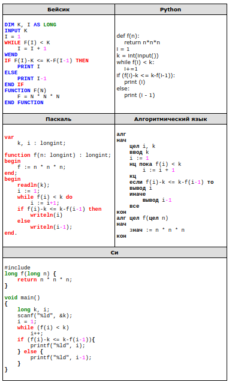
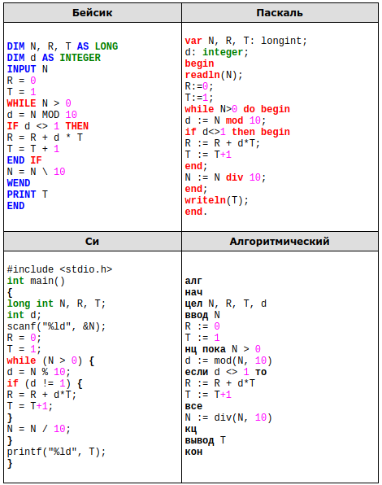
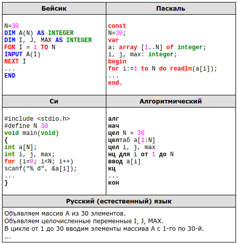

Задание 1
Укажите наименьшее четырёхзначное восьмеричное число, двоичная запись которого содержит ровно 5 нулей. В ответе запишите только само восьмеричное число, основание системы счисления указывать не нужно.
Задание 2
Символом F обозначено одно из указанных ниже логических выражений от трёх аргументов: X, Y, Z.
Дан фрагмент таблицы истинности выражения F:
| X | Y | Z | F |
| 0 | 1 | 1 | 1 |
| 1 | 0 | 1 | 0 |
| 1 | 1 | 0 | 1 |
Какое выражение соответствует F?
- ¬X ∨ Y ∨ ¬Z
- ¬(Х ∧ У ∧ Z)
- ¬Х ∧ ¬Y ∧ Z
- ¬(Х ∨ Y ∨ Z)
Зaдание 3
Между четырьмя местными аэропортами: ГЕОРГИЕВО, ГОЛУБЕВО, ЗАХАРОВО и ГРУШЕВО, ежедневно выполняются авиарейсы. Приведён фрагмент расписания перелётов между ними:
| Аэропорт вылета | Аэропорт прилета | Время вылета | Время прилета |
|---|---|---|---|
| ГРУШЕВО | ГЕОРГИЕВО | 6:00 | 7:45 |
| ГЕОРГИЕВО | ГОЛУБЕВО | 6:35 | 7:20 |
| ГОЛУБЕВО | ГЕОРГИЕВО | 7:00 | 7:55 |
| ГРУШЕВО | ЗАХАРОВО | 7:15 | 8:20 |
| ГЕОРГИЕВО | ЗАХАРОВО | 7:30 | 8:35 |
| ЗАХАРОВО | ГЕОРГИЕВО | 7:35 | 8:15 |
| ГЕОРГИЕВО | ГРУШЕВО | 8:15 | 9:50 |
| ГРУШЕВО | ГОЛУБЕВО | 8:20 | 9:35 |
| ГОЛУБЕВО | ГРУШЕВО | 8:30 | 9:20 |
| ЗАХАРОВО | ГРУШЕВО | 9:15 | 9:45 |
Путешественник оказался в аэропорту ГЕОРГИЕВО в полночь. Определите самое раннее время, когда он может попасть в аэропорт ГРУШЕВО. Считается, что путешественник успевает совершить пересадку в аэропорту, если между временем прилета в этот аэропорт и временем вылета проходит не менее часа.
- 7:45
- 9:20
- 9:45
- 9:50
Задание 4
Для групповых операций с файлами используются маски имён файлов. Маска представляет собой последовательность букв, цифр и прочих допустимых в именах файлов символов, в которых также могут встречаться следующие символы. Символ «?» (вопросительный знак) означает ровно один произвольный символ. Символ «*» (звездочка) означает любую последовательность символов произвольной длины, в том числе «*» может задавать и пустую последовательность.
Определите, какое из указанных имён файлов удовлетворяет маске: *b*a*.c?*.
- harbour.cpp
- probable.cpp
- base.c
- debt.cpp
Задание 5
Для кодирования букв А, Б, В, Г решили использовать двухразрядные последовательные двоичные числа (от 00 до 11 соответственно). Закодируйте таким образом последовательность символов ГБВА и запишите результат шестнадцатеричным кодом.
Задание 6
Для кодирования букв А, Б, В, Г решили использовать двухразрядные последовательные двоичные числа (от 00 до 11 соответственно). Закодируйте таким образом последовательность символов ГБВА и запишите результат шестнадцатеричным кодом.
1. прибавь 3,
2. умножь на 2.
Первая из этих команд увеличивает число на экране на 3, вторая — умножает его на 2. Программа для исполнителя Троечник — это последовательность номеров команд. (Например, программа 1211 — это программа прибавь 3, умножь на 2, прибавь 3, прибавь 3.Эта программа преобразует число 2 в число 16.)
Запишите программу, которая преобразует число 11 в число 103 и содержит не более 5 команд. Если таких программ более одной, то запишите любую из них.
Задание 7
Дан фрагмент электронной таблицы. Из ячейки B2 в одну из ячеек диапазона A1:A4 была скопирована формула. При копировании адреса ячеек в формуле автоматически изменились, и числовое значение в этой ячейке стало равным 13. В какую ячейку была скопирована формула? В ответе укажите только одно число — номер строки, в которой расположена ячейка.
| A | B | C | D | E | |
|---|---|---|---|---|---|
| 1 | 7 | 8 | 9 | 10 | |
| 2 | = D$3 + $C2 | 7 | 8 | 9 | |
| 3 | 5 | 6 | 7 | 8 | |
| 4 | 4 | 5 | 6 | 74 |
Примечание.Знак $ обозначает абсолютную адресацию.
Задание 8
Запишите значение переменной а после выполнения фрагмента алгоритма:

*Примечание: знаком := обозначена операция присваивания. В бланк ответов впишите только число.
Задание 9
Производится одноканальная (моно) цифровая звукозапись. Значение сигнала фиксируется 48 000 раз в секунду, для записи каждого значения используется 32 бит. Запись длится 4 минуты, её результаты записываются в файл, сжатия данных не производится. Какая из приведённых ниже величин наиболее близка к размеру полученного файла?
- 44 Мбайт
- 87 Мбайт
- 125 Мбайт
- 175 Мбайт
Задание 10
Все 5-буквенные слова, составленные из букв А, К, Р, У, записаны в алфавитном порядке. Вот начало списка:
- ААААА
- ААААК
- ААААР
- ААААУ
- АААКА
Запишите слово, которое стоит на 150-м месте от начала списка.
Задание 11
Алгоритм вычисления значения функции F(n), где n - натуральное число, задан следующими соотношениями:
F(n) = 1 при n ≤2;
F(n) = 2 × F(n −1) + F(n −2) при n> 2.
Чему равно значение функции F(6)? В ответе запишите только натуральное число.
Задание 12
Маской подсети называется 32-разрядное двоичное число, которое определяет, какая часть IP-адреса компьютера относится к адресу сети, а какая часть IP-адреса определяет адрес компьютера в подсети. В маске подсети старшие биты, отведенные в IP-адресе компьютера для адреса сети, имеют значение 1; младшие биты, отведенные в IP-адресе компьютера для адреса компьютера в подсети, имеют значение 0.
Если маска подсети 255.255.255.224 и IP-адрес компьютера в сети 162.198.0.157, то порядковый номер компьютера в сети равен_____
Задание 13
Сколько бит содержит 2 Кбайта?
Задание 14
Система команд исполнителя РОБОТ, «живущего» в прямоугольном лабиринте на клетчатой плоскости, включает в себя 4 команды-приказа и 4 команды проверки условия.
Команды-приказы:
| вверх | вниз | влево | вправо |
|---|
При выполнении любой из этих команд РОБОТ перемещается на одну клетку соответственно: вверх ↑, вниз ↓, влево ←, вправо →.
Если РОБОТ начнёт движение в сторону находящейся рядом с ним стены, то он разрушится, и программа прервётся.
Другие 4 команды проверяют истинность условия отсутствия стены у каждой стороны той клетки, где находится РОБОТ:
| сверху свободно | снизу свободно | слева свободно | справа свободно |
|---|
Цикл
ПОКА условие
последовательность команд
КОНЕЦ ПОКА
выполняется, пока условие истинно.
В конструкции
ЕСЛИ условие
ТО команда1
ИНАЧЕ команда2
КОНЕЦ ЕСЛИ
выполняется команда1 (если условие истинно) или команда2 (если условие ложно).
Сколько клеток лабиринта соответствуют требованию, что, начав движение в ней и выполнив предложенную программу, РОБОТ уцелеет и остановится в закрашенной клетке (клетка А1)?
НАЧАЛО
ПОКА слева свободно ИЛИ сверху свободно
ЕСЛИ слева свободно
ТО влево
ИНАЧЕ вверх
КОНЕЦ ЕСЛИ
КОНЕЦ ПОКА
КОНЕЦ

Задание 15
На рисунке представлена схема дорог, связывающих города А, Б, В, Г, Д, Е, Ж, З, И, К, Л, М. По каждой дороге можно двигаться только в одном направлении, указанном стрелкой. Сколько существует различных путей из города А в город М?

Задание 16
Запишите десятичное число 48 в системе счисления с основанием 4. Основание системы счисления (нижний индекс после числа) писать не нужно.
Задание 17
В языке запросов поискового сервера для обозначения логической операции «ИЛИ» используется символ «|», а для обозначения логической операции «И» — символ «&». В таблице приведены запросы и количество найденных по ним страниц некоторого сегмента сети Интернет.
| Запрос | Найдено страниц (в сотнях тысяч) |
|---|---|
| Ухо | 35 |
| Подкова | 25 |
| Наковальня | 40 |
| Ухо | Подкова | Наковальня | 70 |
| Ухо & Наковальня | 10 |
| Ухо & Подкова | 0 |
Какое количество страниц (в сотнях тысяч) будет найдено по запросу Подкова & Наковальня?
Считается, что все запросы выполнялись практически одновременно, так что набор страниц, содержащих все искомые слова, не изменялся за время выполнения запросов.
Задание 18
Для какого из названий животных ложно высказывание:
(Заканчивается на согласную букву) Λ (B слове 6 букв) → (Четвертая буква согласная)?
- Страус
- Леопард
- Верблюд
- Кенгуру
Задание 19
Значения элементов двухмерного массива A[1..10,1..10] сначала равны 0. Затем выполняется следующий фрагмент программы:

Сколько элементов массива будут равны 9?
Задание 20
Ниже записана программа. Получив на вход число x , эта программа печатает два числа, L и M. Укажите наибольшее из таких чисел x, при вводе которых алгоритм печатает сначала 3, а потом 7.
var x, L, M: integer;
begin
readln(x);
L:=0; M:=0;
while x > 0 do begin
L:= L + 1;
if M < x then begin
M:=x mod 10;
end;
x:= x div 10;
end;
writeln(L); write( M);
end
Задание 21
Напишите в ответе число, равное количеству различных значений входной переменной k, при которых приведённая ниже программа выводит тот же ответ, что и при входном значении k = 25. Значение k = 25 также включается в подсчёт количества различных значений k. Для Вашего удобства программа приведена на пяти языках программирования.

Задание 22
Исполнитель Плюс преобразует число на экране.
У исполнителя есть две команды, которым присвоены номера:
1. Прибавить 2
2. Прибавить 5
Первая команда увеличивает число на экране на 2, вторая увеличивает это число на 5. Программа для исполнителя Плюс — это последовательность команд.
Сколько существует программ, которые число 1 преобразуют в число 20?
Задание 23
Составьте таблицу истинности для логической функции
X = (А ↔ B) ∨ ¬(A → (B ∨ C))
в которой столбец значений аргумента А представляет собой двоичную запись числа 27, столбец значений аргумента В — числа 77, столбец значений аргумента С — числа 120. Число в столбце записывается сверху вниз от старшего разряда к младшему(включая нулевой набор). Переведите полученную двоичную запись значений функции X в десятичную систему счисления.
В ответе не нужно перечислять все различные наборы значений переменных x1, х2, хЗ, х4, х5, хб, х7, х8, x9, x10 при которых выполнена данная система равенств. В качестве ответа Вам нужно указать количество таких наборов.
Задание 24
Требовалось написать программу, которая получает на вход натуральное число N, не превосходящее 109, и выводит число, которое получается из N после удаления всех единиц; порядок остальных цифр при этом не меняется. Например, число 19520125 должно быть преобразовано в число 952025. Число, в котором все цифры — единицы и нули, должно быть преобразовано в 0. Незначащие нули в старших разрядах полученного числа печатать не нужно.
Программист торопился и написал программу неправильно.

Последовательно выполните следующее.
1. Напишите, что выведет эта программа при вводе числа 314.
2. Найдите все ошибки в этой программе (их может быть одна или несколько). Для каждой ошибки:
1) Выпишите строку, в которой сделана ошибка.
2) Укажите, как исправить ошибку — приведите правильный вариант строки.
Обратите внимание, что требуется найти ошибки в имеющейся программе, а не написать свою, возможно, использующую другой алгоритм решения.
Задание 25
Дан целочисленный массив из 30 элементов. Элементы массива могут принимать значения от 150 до 200 – рост учащихся выпускного класса. В команду по автогонкам входят все учащиеся, чей рост не более 175 см. Гарантируется, что такие учащиеся в классе есть. Опишите на русском языке или на одном из языков программирования алгоритм, который находит и выводит рост самого высокого участника гоночной команды.

В качестве ответа необходимо привести фрагмент программы (или описание алгоритма на естественном языке), который должен находиться на месте многоточия. Вы можете записать решение также на другом языке программирования (укажите название и используемую версию языка программирования, например Borland Pascal 7.0) или в виде блок-схемы. В этом случае вы должны использовать те же самые исходные данные и переменные, какие были предложены в условии (например, в образце, записанном на естественном языке).
Задание 26
Два игрока, Петя и Ваня, играют в следующую игру. Перед ними лежат две кучки камней, в первой из которых 4, а во второй - 3 камня. У каждого игрока неограниченно много камней. Игроки ходят по очереди, первый ход делает Петя. Ход состоит в том, что игрок или утраивает число камней в какой-то куче, или добавляет 1 камень в какую-то кучу. Игра завершается в тот момент, когда общее количество камней в двух кучах становится не менее 20. Если в момент завершения игры общее число камней в двух кучах не менее 35, то выиграл Ваня, в противном случае - Петя. Кто выигрывает при безошибочной игре обоих игроков? Укажите, стратегию выигрывающего игрока - какой ход он должен сделать в каждой из позиций, которые могут ему встретиться при правильной игре. Докажите, что описанная стратегия - выигрышная.
Задание 27
На вход программе подаются 366 строк, которые содержат информацию о среднесуточной температуре всех дней 2004 года. Формат каждой из строк следующий: сначала записана дата в виде dd.mm (на запись номера дня и номера месяца в числовом формате отводится строго два символа, день от месяца отделен точкой), затем через пробел записано значение температуры — число со знаком плюс или минус, с точностью до 1 цифры после десятичной точки. Данная информация отсортирована по значению температуры, то есть хронологический порядок нарушен. Напишите эффективную, в том числе и по используемой памяти, программу (укажите используемую версию языка программирования, например Borland Pascal 7.0), которая будет выводить на экран информацию о месяце (месяцах) среднемесячная температура для которого (которых) наименее отклоняется от среднегодовой. В первой строке вывести среднегодовую температуру. Найденные значения дтя каждого из месяцев следует выводить в отдельной строке в следующем виде: номер месяца, значение среднемесячной температуры, отклонение от среднегодовой температуры.